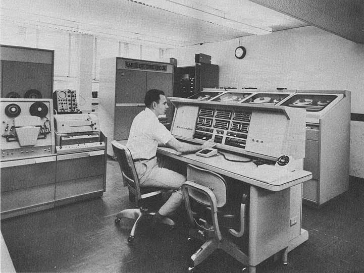

Burroughs 220 Emulator – Hosting Site Home
(Under Construction)
This site hosts the current version of the retro-220 emulator, an implementation of the Burroughs 220 computer system that runs in a web browser.

Main Links
- 220 Emulator Home Page
The home page from which you can start the emulator and open the control panels.
- Open Source Project
Source code, documentation, and other developer resources for the retro-220 emulator project at GitHub.
- Project Blog
Tom Sawyer's Burroughs 205 and 220 blog, which includes posts related to this emulator.
- Burroughs 220 Documents at bitsavers.org
A collection of scanned copies of original Burroughs manuals and other reference materials for the 220 system.
Like this? Check out the
Burroughs B5500 and
ElectroData/Burroughs 205 emulators.
Revised
2016-12-25